한국서부발전은 2017년 12월, 태안화력 9·10호기를 준공했다. 45개월이라는 최단 기간 동안 건설한 발전용량 1,050MW의 국내 최대용량 화력발전소이다.
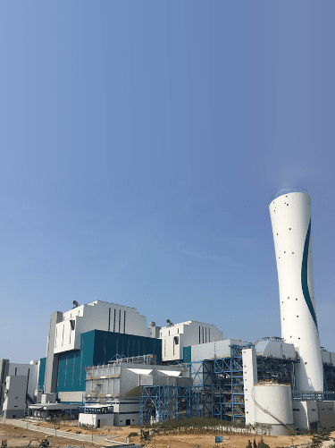
IMAGE2017. 12. 21 / 충남 태안군 한국서부발전 IGCC 발전소
한국서부발전은 지속적인 전력 소비량의 증가 추세와 고효율 대용량 전력공급설비의 요구로 친환경과 안전, 안정적 전력수급을 최우선으로 태안발전본부 내 부지에 건설사업을 추진했다.
국내 최초 50인치의 터빈 최종단을 적용하고 증기온도를 600℃까지 격상한 세계 최고 효율의 초초임계압 발전소로, 저열량탄 혼소범위가 넓고 기존 석탄발전소 열효율보다 약 3%p 향상시킨 45%의 ‘고효율 발전소’이다.
기존설비에 비해 연간 140만 톤의 이산화탄소 발생량 저감효과와 고효율 전기집진기, 배연탈황설비, 탈질설비, 옥내저탄장 및 옥외 태양광 설비 등 최첨단 환경설비를 적용해 오염물 배출을 법적 배출허용기준치의 약 50% 이하로 상시 유지하는 ‘친환경 발전소’일 뿐만 아니라 발전소 주변지역 소득 증대사업, 육영사업, 전기요금 보조사업 등 지역경제 활성화에도 크게 이바지하는 ‘지역상생 발전소’로 인정받고 있다.
CHAPTER2
한국형 복합화력 구축을 위한 교두보, 김포 열병합발전소 건설
경기도 김포시 양촌읍 학운2산업단지 김포열병합발전소 건설현장에서는 우리나라 열병합발전의 새로운 역사가 쓰이고 있다.
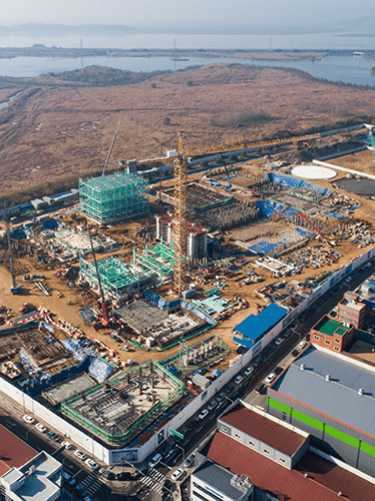
IMAGE건설 중인 김포 열병합발전소
한국서부발전이 국산화 선도를 위해 선제적으로 도입하기로 하고, 두산중공업이 국내 최초, 세계 다섯 번째로 자체 개발한 발전용 가스터빈이 설치되고 있는 것이다.
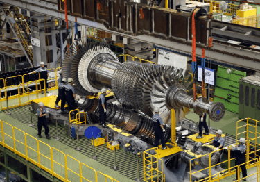
IMAGE두산중공업에서 개발 중인 발전용 대형 가스터빈 초도품
열병합발전은 ‘하나의 에너지원으로부터 열과 전력을 동시에 발생시켜 용도별로 적절히 공급해 에너지 이용 효율의 극대화를 추구하는 시스템’이다. 특히 김포열병합발전소는 청정연료인 천연가스만을 사용해 미세먼지 저감정책에도 부합하는 친환경 에너지원이다.
김포열병합발전소는 2020년 12월 착공해 2023년에 준공 및 상업운전을 목표로 한다. 완공되면 연간 2,788GWh(일일 495MW)의 전기와 140만 8,270Gcal(일일 281Gcal)의 열을 동시에 생산해 에너지효율을 높이는 동시에 김포와 인천지역 50만 세대에 전기와 8만 세대에 열을 공급하게 된다.
김포열병합발전소는 한국형 표준 가스터빈이 최초로 상업화된 복합발전소로서 국산 가스터빈의 안전성과 신뢰성을 확보하고, 더 나아가 한국형 복합화력 구축을 위한 교두보로 자리 잡게 될 것이다.
CHAPTER3
한국형 IGCC 기술개발과 연속운전 4000시간 신기록 달성
한국서부발전은 2021년 1월 28일 석탄가스화복합발전(IGCC: Integrated Gasification Combined Cycle) 연속운전 4,000시간이라는 위업을 달성했다.
기존 기록은 2013년 일본의 나코소IGCC 3,917시간, 2018년 중국의 톈진IGCC 3,993시간이었다.
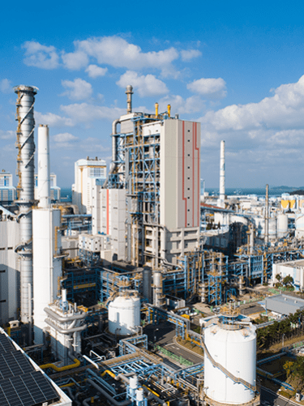
IGCCIMAGE태안발전본부 내 IGCC
태안IGCC 4,000시간 연속운전은 준공 4년 6개월 만에 달성한 것으로 20년 이상 운영 중인 미국의 연속운전 기록도 2,088시간에 불과해 한국서부발전의 기록경신은 더욱 놀라운 것이었다.
IGCC는 석탄을 원료로 복합발전에 사용되는 연료(합성가스)를 생산하는 미래형 고효율 복합발전 기술이다.
한국서부발전은 국내 유일 태안IGCC의 설비이용률을 2021년까지 80% 달성하고자 추진전략 ‘K1 IGCC 2180’을 수립해 설비신뢰도 확보, 운전기술 고도화 등 5대 분야 70개 추진과제를 발굴해 한국서부발전 본사와 사업소가 협업해 과제를 수행했다.
이처럼 태안IGCC 연속운전 세계기록 경신은 설비 안정화에 기여한 한국서부발전 직원과 협력사의 기술력 결집으로 이뤄낸 공동의 성과여서 그 의미가 더욱 뜻깊었다.
태안 IGCC는 2021년 3월 12일 기준 5,035시간 연속 운전을 끝으로 발전사에 새로운 이정표를 세우며 세계 기록 경신에 마침표를 찍었다.
CHAPTER4
발전기술 및 기자재 국산화 선도
한국서부발전은 2018년 6월 발전사 최초로 국산화부를 신설해 발전기술 및 기자재 국산화 사업에 선제적으로 나섰다.
이를 통해 2018년 10월 국산화 개발 중장기 로드맵을 수립, 미래 발전시장 동향, 핵심부품 기술 트렌드, 국산화 현장 수요를 종합적으로 비교 분석, 6,274건의 국산화 대상품목을 선정했다.
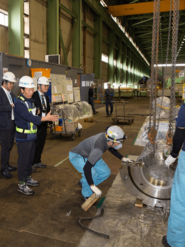
IMAGE2019. 10. 15 / 제7회 국산화 현장설명회
이와 함께 열악한 국산화 기술개발 환경을 개선하기 위해 발전산업 신규 진출 기업에 대해 과감한 진입장벽 해소, 시제품 실증 테스트베드(Test-Bed) 지원, 국산화위원회 운영, 성과보상제도 연계, 기술력 보유 회사와 다(多)채널 소통 활동 등 다양한 프로그램을 시행해나갔다.
2020년 6월에는 ‘WP-코디30’사업을 마련해 국산화 개발 활성화와 중소기업 상생협력을 위해 매년 30개 기업을 선발해 1년간 기술개발 애로사항을 해결해 주는 밀착 지원 사업을 추진했다.
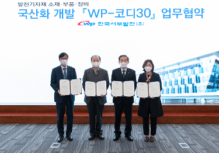
IMAGE2020. 10. 29 / 발전설비 국산화 ‘WP-코디30’ 본격화를 위한 국산화 개발 업무협약식 개최
국산화 주요 사례
국산화 주요 성과
한국서부발전의 이러한 중소기업에 대한 적극적인 지원을 통한 국산화 노력은 해를 거듭하며 가시적인 성과로 나타나기 시작했다.
인공지능(AI)·빅데이터(Big Data)·사물인터넷(IoT)·드론(Drone) · 모바일(Mobile)·3D프린팅·증강현실(AR)·가상현실(VR) 등 7대 기술을 중심으로 산 · 학 · 연과 협업해 오는 2023년까지 146개의 과제에 340억 원을 투자할 계획이다.
그 사례로, 한국서부발전은 2021년 4월 7일 국내 최초로 신재생에너지 발전현장에 인공지능형 레일로봇 기술을 적용하는데 성공했다.
레일로봇은 CCTV와 열화상카메라, 음향센서뿐만 아니라 일산화탄소(CO), 이산화탄소(CO₂), 메탄(CH4) 누설을 감지하는 센서를 탑재하고 화재 징후를 사전에 인지하기 위한 딥러닝(Deep Learning) 기술과 연료전지 발전설비 구역 내 무허가 출입에 대한 자동 추적기술도 적용했다. 이를 통해 감지된 이상 상황은 설비 담당자에게 즉시 문자로 전송돼 실시간 확인은 물론 즉각적인 조치가 가능하다.
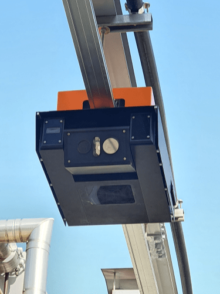
IMAGE발전설비 24시간 감시시스템 AI로봇 레일로봇
2020년 11월 9일에는 전자기술연구원(KETI)과 ‘서부 디지털 기술공유센터’를 열었다. 한국서부발전에서 생성되는 약 40만 개 발전데이터가 서부발전 공유 플랫폼을 통해 민간에 개방하는 역할을 한다.
2021년, 발전소에서 생산된 빅데이터를 이용한 연구경진대회인 ‘디지털전환 그랜드 챌린지’ 공모를 추진했으며, 선정된 9개 연구모델은 향후 현장에 바로 적용되는 혁신 우수제품 개발로 이어질 수 있도록 지원하고 있다.
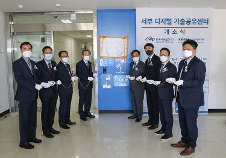
IMAGE2020. 11. 09 / 한국전자기술연구원(KETI)과 경기 성남 판교글로벌R&D센터에 서부 디지털 기술공유센터 개소
그밖에 2016년 ‘드론활용 설비점검 시스템’을 도입, 2018년 4세대 이동통신(LTE)급 드론 실시간 영상송수신 시스템을 구축해 풍력과 태양광발전 등 신재생발전설비 점검에 드론시스템을 활용하고 있다.
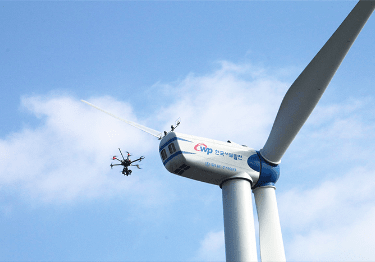
IMAGE2018. 02. 08 / 드론 활용 신재생설비 원격 합동점검
2020년 1월에는 ‘스마트 모바일 영상관제 시스템’을 전사 구축했고
2021년 5월에는 한국생산기술연구원, 재료연구소, 파트너스랩과 협력해 국내 최초로 ‘3D프린팅 이종소재 적층기술’을 활용한 고내식성 발전부품 개발에 성공했으며,
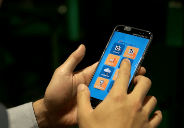
IMAGE4차 산업혁명 기술 활용 스마트 발전소 구현
2017년 11월, 가상현실(VR)과 증강현실(AR) 기술을 접목해 현장과 동일하게 발전설비 분해정비 교육을 할 수 있는 ‘가상훈련시스템’ 개발을 완료하는 등
4차 산업혁명을 대비해 스마트 워크를 구현함으로써 현장 직원들의 발전소 점검 능력을 향상시켜 나가고 있다.
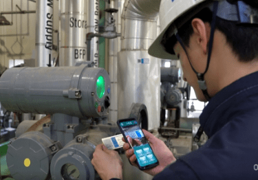
i-PLISIMAGE2020. 06 / QR 코드와 VR 활용한 발전소 현장설비정보시스템 i-PLIS